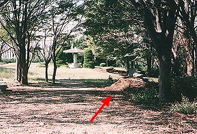
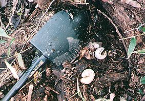

|
カブトムシ幼虫の採集ポイント |
|---|
案内図(あんないず)の印(しるし)のあたりにカブトムシが産卵(さんらん)するところが用意(ようい)されています。これは、池田市の緑の課や緑のセンター・市民の森を守る会・クワガタ探検隊の人達が用意してくれているものです。

道路(どうろ)に植(う)えられた木(街路樹…がいろじゅ)の枝(えだ)を落(お)としたものが砕(くだ)かれたものです。シイタケを栽培(さいばい)されている人からも木をいただいてくるそうです。ですからコクワガタの幼虫がみつかることもあります。

新(あたら)しいものにはあまりカブトムシは卵(たまご)を産(う)みません。赤いまるのしるしの場所(ばしょ)のほかにもなんかしょも用意(ようい)されていますのでそのほかの場所もさがしてください。学年全員(がくねんぜんいん)でとりに行くこともありますので4月になってからでは遅(おそ)すぎます。かんたんに見つけられる場所にはあまりいません。とられたあとです。ほんとうは、4月にとると、あまり餌(えさ)をあげなくても育(そだ)てられるので楽(らく)なのですが…。飼い方は、「入口」ページの「生き物のかいかた」のところを見てください。

1998年10月に探(さが)すとこのようにかんたんに幼虫が出てきました。
このページを見てくれた人だけにちょっとだけヒントをあげます。
くだいたものがたくさんあるところには幼虫はあまりいませんでした。みんながとったり、モグラが幼虫を食(た)べてしまったのでしょう。そのまわりをよく見てシイタケを育(そだ)てたあとの木が置(お)いてあるところを見つけてください。よくくさった木の下に幼虫がいます。ただし、ムカデにさされないようにしてください。ハチにさされるよりも痛(いた)みます。いきなり木にさわらないように…。